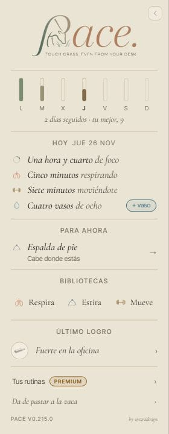
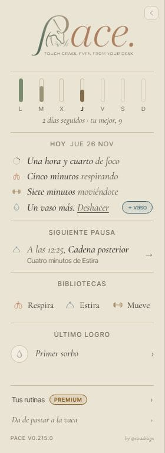
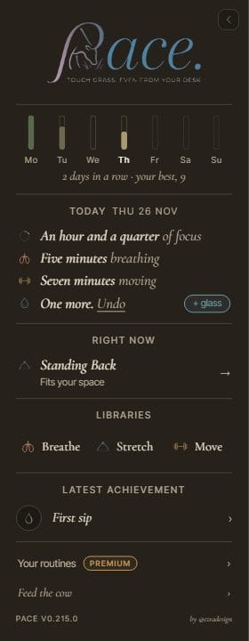
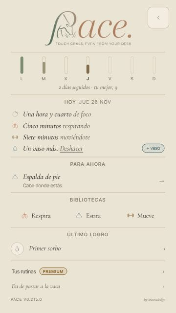
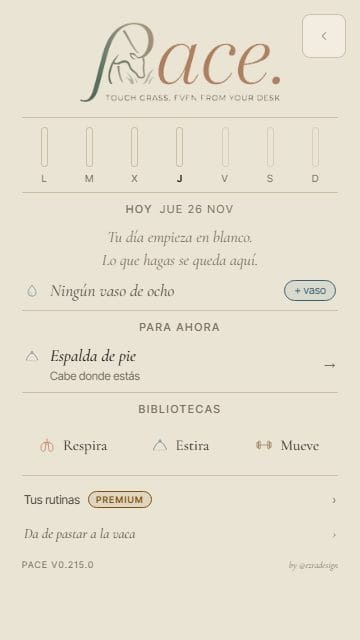
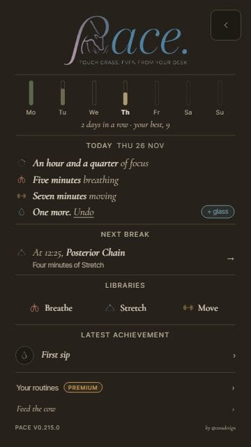
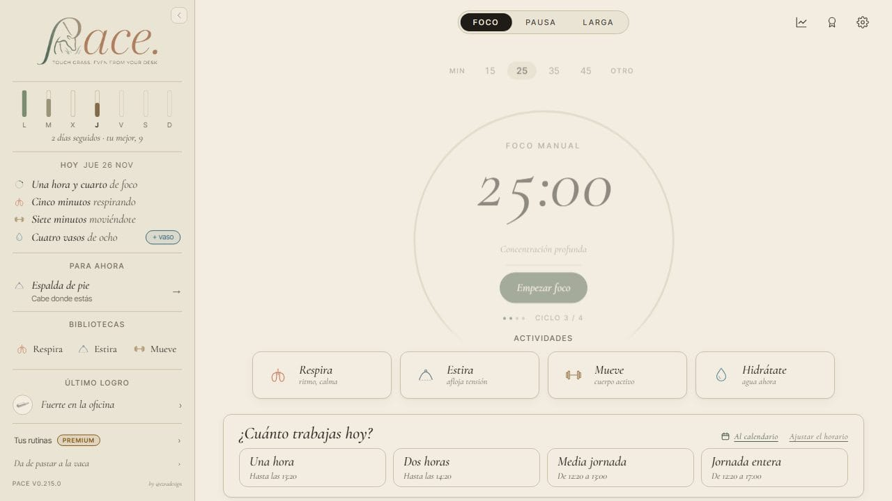

PACE · 23 nov. 2026 · rama claude/sidebar-mejoras-23nov-bceb9a · sin juntar
La barra lateral, con 1C 2A 3B 4B 5A
- 1C: como estaba; el encogido no se toca.
- 2A: tras sumar un vaso, «Un vaso más. Deshacer» durante cinco segundos; «Deshacer» lo quita.
- 3B: el último logro en una línea; sin ninguno, el bloque no sale.
- 4B: «2 días seguidos · tu mejor, 9».
- 5A: Ctrl + \ (⌘ + \ en el Mac) pliega y despliega la barra; los títulos lo dicen. No se ve en las fotos.








Medido: el título de logro más largo ocupa el 70 % de su línea, y a «Un vaso más. Deshacer» le sobran 23 px hasta «+ vaso» en el caso más justo. Nada queda al borde (entre sistemas la letra baila hasta 7 px).